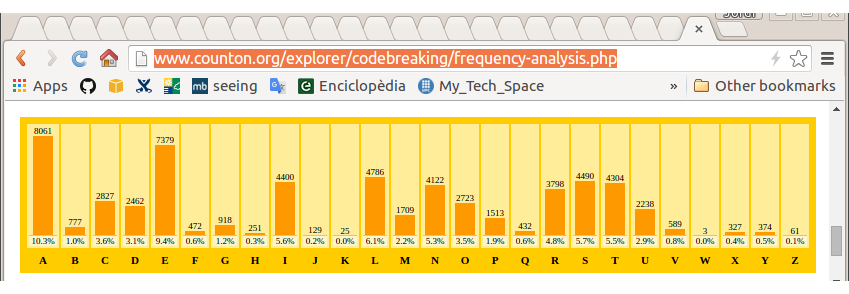
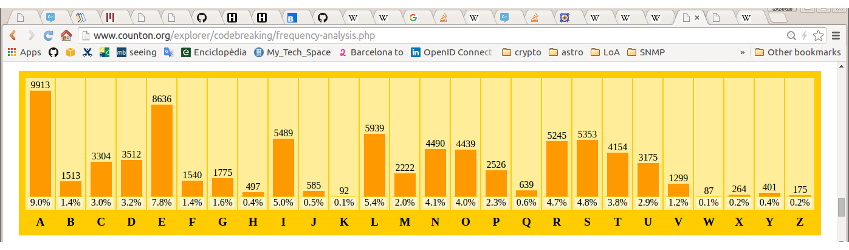
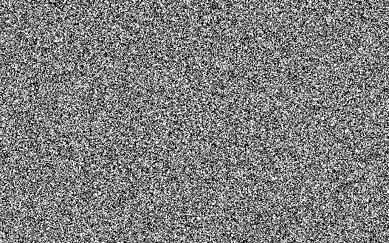

Introducció, Història

“Curs d'Introducció a la criptografia” by Jordi Íñigo Griera is licensed under a
Creative Commons Attribution 4.0 International License.
Project hosted at github.com/jig/crypto
1976
L'NSA selecciona un algorisme de xifrat d'IBM per a comunicacions entre/amb l'administració: DES (Data Encryption Standard)
Whitfield Diffie i Martin Hellman generen el primer algorisme pràctic de criptografia asimètrica
Història
(pre-1976)
Criptografia $\Rightarrow$ Xifrat
Fins els '70 la criptografia es fa servir per a dificultar que algú aliè pugui entendre el que s'envia
$c = e(k,m)$
un missatge $m$ (plain-text) es xifra amb la funció de xifrat $e()$, que se
li passa amb una clau $k$ per a donar el missatge
xifrat $c$ (cipher-text)
$m = d(k,c)$
per desxifrar cal passar la clau $k$ i el missatge xifrat $c$ a la funció de desxifrat
$m=d(k,c)$
El resultat $m$ és el missatge en clar un altre cop
pre-1976
Fins els '70 la criptografia o era "insegura" o no era "pràctica"
Xifrat del Cèsar
Canviem cada lletra del missatge, per una lletra alternativa de l'alfabet
Per exemple, per $k=3$
la funció de xifrat $e(3,m)$ genera la següent taula:
| $m$ | $c$ | |
| A | $\rightarrow$ | X |
| B | $\rightarrow$ | Y |
| C | $\rightarrow$ | Z |
| D | $\rightarrow$ | A |
| E | $\rightarrow$ | B |
| ... | ... |
Desxifrat del Cèsar
Girem la taula
| $c$ | $m$ | |
| A | $\rightarrow$ | D |
| B | $\rightarrow$ | E |
| C | $\rightarrow$ | F |
| D | $\rightarrow$ | G |
| E | $\rightarrow$ | H |
| ... | ... |
Seguretat del xifrat del César
HOLAMON
ELIXJLK
què podem fer si tenim accés al text xifrat ELIXJLK?
$0 < k < 26 \implies $ podem fer un atac de força bruta
si el missatge és prou llarg, podem analitzar la freqüència d'aparició dels caràcters
Seguretat del xifrat del César
$0 < k < 26 \implies $ podem fer un atac de força bruta
Un atac de força bruta implica provar sobre el missatge xifrat $c$ totes les possibles claus $k_i$ fins que trobem "la bona":
- desxifrar amb la clau $\overset{?}{m} = d(c, k_i)$ ...
- ...i validar si $\overset{?}{m}$ és vàlid (o sigui, si $m=\overset{?}{m}$)
Redundància
- desxifrar amb la clau $\overset{?}{m} = d(c, k_i)$ ...
- ...i validar si $\overset{?}{m}$ és vàlid (o sigui, si $m=\overset{?}{m}$)
el segon punt no sempre és senzill
exigeix que l'espai de missatges contingui missatges vàlids (pocs) i missatges invàlids (molts)
cal redundància
que en l'exemple anterior la redundància la tenim ja que no qualsevol combinació de caràcters genera "paraules" inintel·ligibles
una contramesura contra l'atac de força bruta contra el xifrat del Cèsar és minimitzar la redundància dels missatges (compressió, etc.)
Desxifrar
- desxifrar amb la clau $\overset{?}{m} = d(c, k_i)$ ...
- ...i validar si $\overset{?}{m}$ és vàlid (o sigui, si $m=\overset{?}{m}$)
el primer punt implica conèixer l'algorisme de
(des)xifrat $d(\circ,\circ)$
sempre hem de suposar que un atacant coneix $d(\circ,\circ)$
la única cosa que no pot conèixer és la clau $k$
Atac de força bruta
Les contramesures contra els atacs de força bruta són:
- que la operació de desxifrat sigui costosa
- que calgui fer moltes operacions de desxifrat
que la operació sigui costosa té el problema que qui desxifra lícitament tingui un cost innecessari: actualment això no es recomana
cal que l'atacant estigui obligat a provar moltes claus
moltes claus
en una CPU "estàndard" es proven $1.000.000$ clau/CPU/s
és a dir: $10^6$ clau/CPU/s
és a dir: es proven $10^{9}$ claus/s en $1000$ CPU
és a dir: es proven $3,6·10^{12}$ claus/h en $1000$ CPU
en AWS EC2 una c4.large costa 10 cèntim/h
és a dir $3,6·10^{11}$ claus/€
si tenim capacitat de dissenyar/fabricar $d(\circ,\circ)$ en hardware (ASIC) els costos baixen després d'un periode d'amortització
Moltes claus
$10^{11}$ claus/€ en números rodons
e.g. si el nostre "secret" té un cost de 1000 €,
ens calen $2·10^{14}$ claus diferents ($\approx2^{48}$)
Seguretat del xifrat del César
HOLAMON
ELIXJLK
què podem fer si tenim accés al text xifrat ELIXJLK?
$0 < k < 26 \implies $ podem fer un atac de força bruta
si el missatge és prou llarg, podem analitzar la freqüència d'aparició dels caràcters
Anàlisi de freqüència
(article de Catalunya a la Viquipèdia / counton.org )

(article del FCB a la Viquipèdia / counton.org )
Anàlisi de freqüència

l'estadística es manté per diferents texts
l'estadística es manté inalterada després del xifrat!
podem aprofitar que l'estadistica es manté,
per a trobar la clau $k$
Millores al
xifrat del Cèsar
Xifrat de Vigenère
Similar al xifrat del Cèsar, però $k$ ara serà una seqüència de números en lloc d'un sòl número (e.g. abans $k=3$):
e.g. $k = \{3,24,10\}$
Nota: habitualment s'escriuen les lletres corresponents als números: $k = \{\text{D},\text{Y},\text{K}\}$
exemple:
HOLAMON
DYKDYKD
KMVDKYQ
Vigenère: Espai de claus
Ara l'espai de claus és (clau de $3$ caràcters):
$\begin{eqnarray} 0 & < k & < {26}^{3} \\ 0 & < k & < 17576 \end{eqnarray}$
no costa gaire incrementar l'espai de claus fent
servir "contrasenyes" més llargues
en general, per a $n$ caràcters:
$0 < k < {26}^{n}$
e.g. $n=8 \implies 2·10^{11}$ (0,50 €)
e.g. $n=12 \implies 10^{17}$ (200.000 €)
e.g. $n=16 \implies 4·10^{22}$ (deute de Grècia)
e.g. $n=17 \implies$ (PIB mundial)
Vigenère: Anàlisi freqüencial
Si segmentem el text xifrat d'acord a la longitud de la contrasenya, cada fragment de text mostrarà les mateixes estadístiques de l'idioma...
només cal saber la longitud de la "contrasenya" o...
...com que l'"espai de longituds" serà probablement limitat, podem provar-los un per un fins que tenim una estadística reconeixible
amb un espai de claus gran no n'hi ha prou
Confidencialitat perfecte
en general, seguretat incondicional
què és la confidencialitat perfecte?
a partir del text xifrat, no es pot deduir
cap propietat*
del text original en clar,
encara que l'atacant tingui capacitat computacional infinita
*) a part de la longitud
*) a part del moment d'enviar-ho
*) a part del nombre de missatges
*) a part de la latència en respondre
és factible la confidencialitat perfecte?
sí,
i va ser inventada i patentada per Vernam el 1917
i va ser demostrada la seva perfecció per Shannon el 1945
com la podem implementar?
el xifrat de Vigenère patia un problema similar al del César:
manifestava l'estadística del missatge en clar
en el missatge xifrat
podem evitar que es manifesti l'estadística en el text xifrat, si utilitzem cada lletra de la contrasenya només un cop
tenim confidencialitat perfecte sii fem servir Vigenére amb una contrasenya tan llarga com el missatge i no coneguda per l'atacant (aleatòria)
Bloc d'un sol ús: xifrat
Vernam va definir el one-time-pad d'una manera similar (però equivalent)
La funció de xifrat $c = e(k, m)$ s'implementa:
$e(k, m) = k \oplus m$
on $\|k\| = \|m\|$
Nota:
$\oplus$ és la or-exclusiva o XOR
$\|\circ\|$ és la longitud en bits de $\circ$
Bloc d'un sol ús: desxifrat
$d(k, c) = k \oplus c$
és fàcil demostrar que funciona ja que:
$\begin{aligned} m &= d(k, c) \\ m &= d(k, e(k, m)) \\ m &= k \oplus c \\ m &= k \oplus (k \oplus m) \\ m &= (k \oplus k) \oplus m \\ m &= \{0\}^{\|k\|} \oplus m \\ m &= m \end{aligned}$
Bloc d'un sol ús: desxifrat
k = ...cal obtenir-la o generar-la
assertEqual(len(m1), len(k))
c = xor(k,m1)
m2 = xor(k,c)
assertEqual(m1,m2)
Experiment amb el Gimp
(has de tenir Gimp instal·lat per a que et funcioni l'experiment)
clica sobre la imatge i obre el fitxer amb Gimp
mira que està composat per dues capes (Ctrl+L):
la clau $k$ i el missatge $m$ combinades amb substract (XOR)
$c$
$k$

$m$

Bloc d'un sol ús: perfecte?
Shannon va demostrar que el blocs d'un sòl ús és "perfecte", i a més a més va demostrar que la longitud en bits de la clau $k$:
$\|k\| \geq \|m\|$
i per tant, que els blocs d'un sol ús fessin servir
$\|k\| = \|m\|$
era la manera més eficient d'obtenir confidencialitat perfecte
Bloc d'un sol ús: “perfecte”
tots els missatges possibles és poden obtenir donada la clau apropiada a partir d'un bloc xifrat $c_i$
$
\begin{aligned}
m_{ai} &= d(k_a, c_i) \\
m_{bi} &= d(k_b, c_i) \\
m_{ci} &= d(k_c, c_i) \\
& \quad \vdots
\end{aligned}
$
cada clau aplicada a $c_i$ em donarà tots els missatges possibles d'$\|m\|$ bits
($\|m\| = \|k\|$ combinacions)
un atacant no pot aprendre res a partir de $c_i$
$\Downarrow$
la confidencialitat és “perfecte”
vulnerabilitats
cap (fins i tot és invulnerable als atacs de força bruta)...
...mentre es compleixin les hipòtesis de treball:
- clau $k$: només és un sol ús
- clau $k$: aleatòria (i.e. uniformement distribuïda)
pre-1976
Fins els '70 la criptografia o era "insegura" o no era "pràctica"
Bloc d'un sol ús: poc pràctic
$\|k\| = \|m\|$
costa tant acordar $k$ de forma segura, com enviar directament $m$ en clar pel mateix canal segur
El telèfon vermell entre Washington i Moscou era (en realitat) un teletip que usava xifrat de bloc d'un sol ús
La clau $k$ s'intercanviava via diplomàtica en cinta que s'entregava en ambdós sentits. Mentre no calia, s'havia de guardar protegida. Es destruïa després de ser usada
En aquest cas la clau s'acordava/es preparava per endavant per a quan calgués enviar algún missatge poguer-ho fer de forma immediata
A més a més, el one-time-pad permetia treballar de forma segura sense intercanviar cap algorisme secret que permetés donar una avantatge tècnic a l'enemic